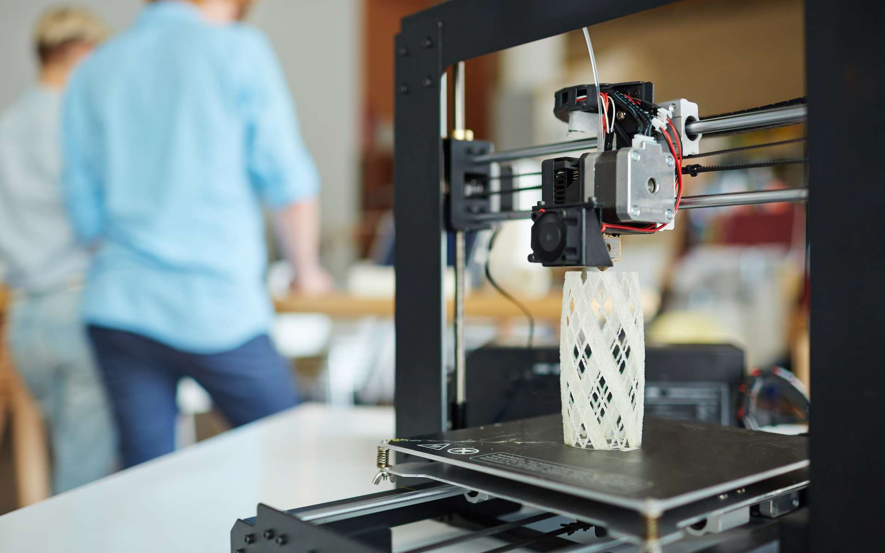
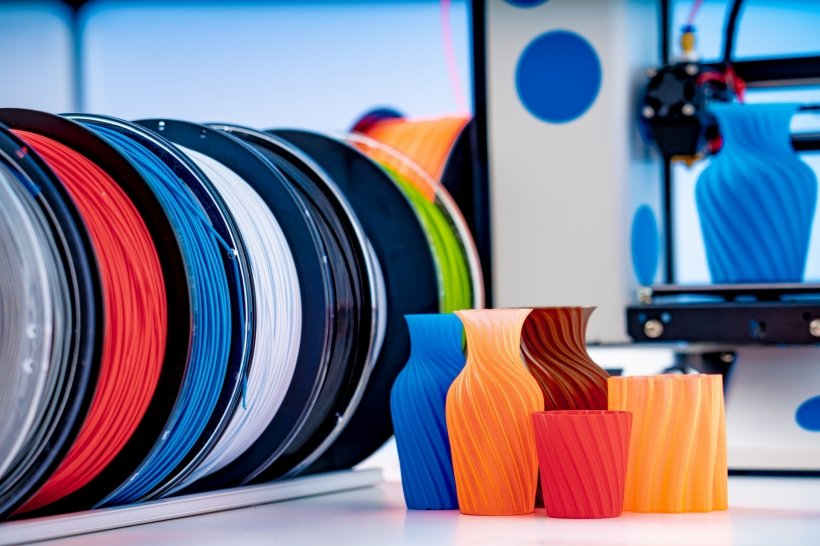
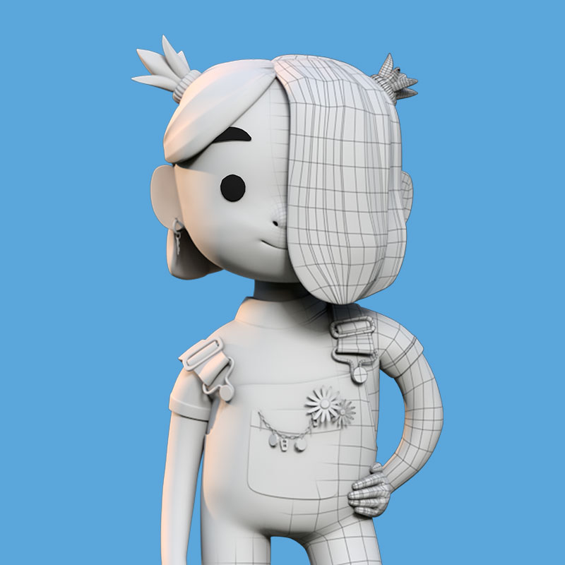
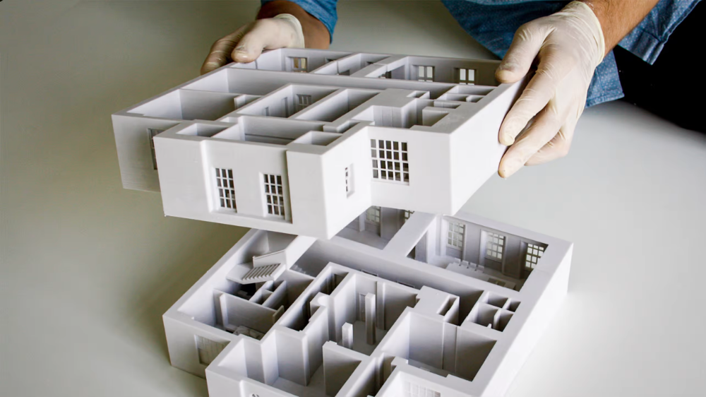
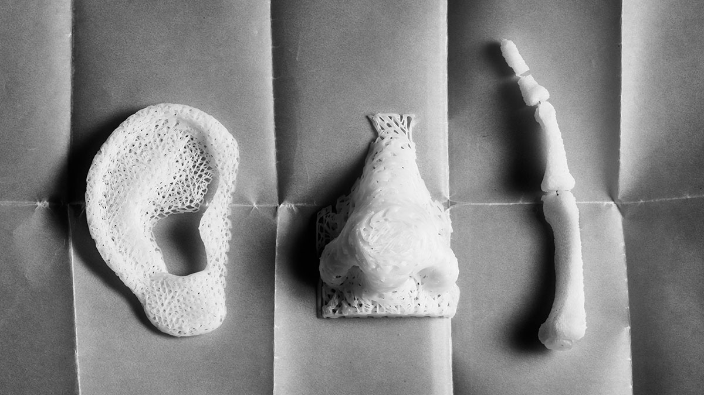

Comment apprendre à imprimer en 3D ?
comment utilisée une imprimante 3d ?, comment utiliser les logiciels de modeling et les logiciels d'impression 3d ?, comment entretenir votre imprimante ? ...
Apprenez le workflow, les technologies de la fabrication additive, les différents matériaux avec les formations de tous genre dédiés et utilisez les logiciels de conception 3D adaptés
dans cette article nous vous proposons différents formation payante, gratuit, en ligne ou en centre de formation pour vous aider a vous lancer ou ameliore vous competence

En ligne
gratuit
MOOC
Chaque semaine, des activités pratiques sont proposées.

Votre défi : imprimer votre premier objet en 3D.
Vous consacrerez 3 heures par semaine à cette formation, à votre propre rythme.
Dans ce MOOC, vous apprendrez à :
Découvrir le potentiel de l'impression 3D,
Comprendre comment passer d'un modèle 3D à un objet physique imprimé,
Expliciter le fonctionnement et les contraintes d'une imprimante 3D,
Imprimer un objet en 3D.
Objectif : devenir autonome pour fabriquer votre objet en vous rendant dans le fablab le plus proche de chez vous.
payante
3D Printing: From Start to Finish
Prérequis:

Intérêt pour l'impression 3D FDM. Une imprimante 3D n'est pas nécessaire
Vous pouvez suivre ce cours même si vous n'avez pas d'imprimante 3D
La description:
L'impression 3D est magique ! Vous prenez un fichier, ou créez le vôtre, envoyez-le à votre imprimante et après un certain temps,
vous avez un objet solide réel. Cela me rappelle quelque chose des Jetsons. Dans ce cours, vous apprendrez toutes les étapes de l'impression 3D,
de son histoire, des moyens d'obtenir la meilleure impression, de l'utilisation de trancheuses et même de la finition de vos impressions.
Impression 3D résine
Prérequis:
Non pas de Prérequis
Description:
Ce cours vous permettra d'apprendre tout ce qui est nécessaire pour réaliser de belles impressions 3D résine.
Vous découvrirez ainsi le fonctionnement du slicer permettant de découper votre objet pour l'imprimante, les réglages idéaux pour l'impression résine,
le fonctionnement de la post impression, l'entretien du matériel, mais aussi la création rapide d'un objet simple pour l'imprimer.
En centre formation
Concepteur 3D, Modélisation Rendu et Animation
Prérequis:

Avoir réussi au test de pré-inscription
La description:
Module 1: Introduction à la 3D et modélisation de base
-Logiciel d’application 3DStudio Max-
Environnement et transformations en 3D.
Objets de base, modificateurs et modélisation polygonale.
Module 2: Modélisation avancée
-Logiciel d’application 3DStudio Max-
Création de modèles complexes, personnages, véhicules, architecture...
Module 3: Texturisation éclairage et rendu
-Logiciel d’application 3DStudio Max-
Editeur de matériau et canal texture.
Espace UVW, fonctions de mapping.
FORMATIONS 3D POUR L'ARCHITECTURE ET LA CONSTRUCTION

Apprenez à utiliser un scanner 3D, à construire des plans et modéliser des maquettes numériques 3D.
Prenez en main le BIM (Building Information Modeling) répertorier et partager des données de bâtiments.
Grâce aux formations F3DF (éligibles au CPF), accédez aux nouvelles méthodes du BIM et des logiciels de conception avec
Autodesk Revit ou Autodesk Navisworks et obtenez vos certifications.
FORMATIONS 3D POUR LE MÉDICAL

De la réalisation d’orthèses et de prothèses à l’impression d’aligneur dentaire ou de guides chirurgicaux, les applications de la 3D dans le secteur médical se multiplient.
Vous trouverez ici toutes les formations pour vous accompagner dans la mise en place de la 3D dans vos pratiques professionnelles quotidiennes, numérisation, conception impression 3D.
L’impression 3D vient au service du confort de vie des patients en permettant de créer des orthèses et prothèses pour des utilisations de longue durée. En plus d’une maîtrise des coûts,
l’impression 3D apporte un réel soutien psychologique aux patients grâce à la personnalisation rendant les prothèses et orthèses uniques, loin des dispositifs médicaux standardisés.
Autres Liens Utiles
MATERIELS
Lorsque vous avez des doutes lors de l'achat, il n'y a rien de mieux que de connaître les caractéristiques les plus importantes et quel type d'imprimante est le meilleur pour chaque cas. Et c'est exactement ce que nous vous montrons dans ce guide : comment choisir une imprimante 3d et comment choisir le filament.
LOGICIELS
Vous cherchez un logiciel pour imprimante 3D ? Découvrez dans notre article les meilleurs logiciels de modelisation 3D !